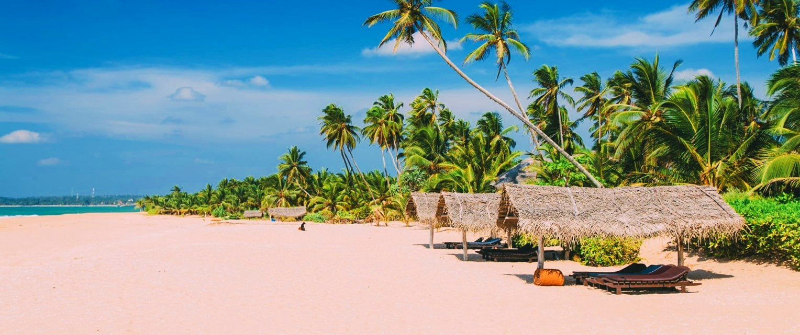
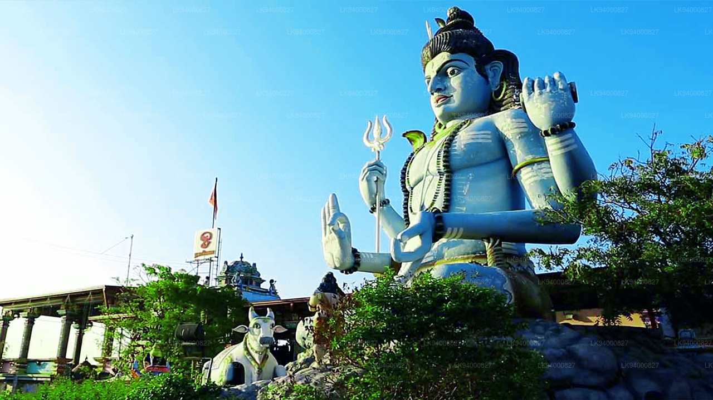
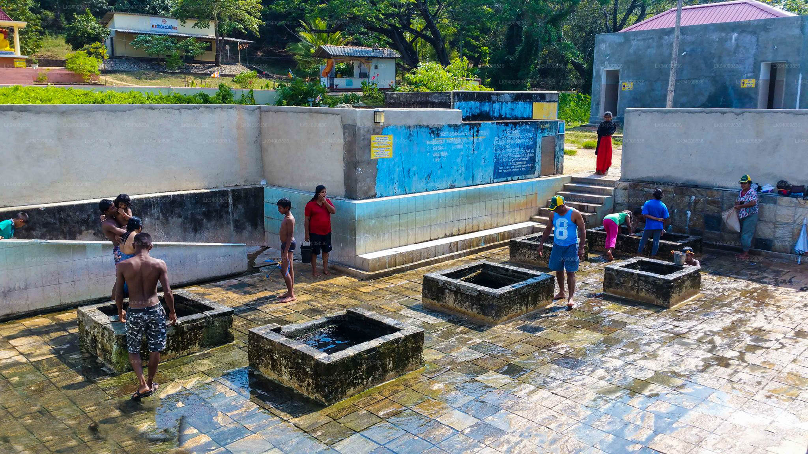

The Best Places to Travel in Eastern Province...
Nilaveli Beach
|  |
Nilaveli (Tamil: நிலாவெளி, romanized: Nilāveḷi; Sinhala: නිල්වැල්ල, romanized: Nilvælla) is a coastal resort town. and a suburb of Trincomalee County, Sri Lanka located 16 kilometers northwest of the city of Trincomalee. Famous Tamil village and tourist district near Uppuveli, The number of tourists has decreased following the 2004 Indian Ocean tsunami and the Sri Lankan Civil War, but it has increased. and since 2010. Pigeon Island National Park, one of the two regional marine reserves is located at 1 km. along the Nilaveli coast, with its many species of plants, corals and reef fish contributing to Nilaveli's richness. biodiversity.
Koneswaram Temple
|  |
Koneswaram Temple of Trincomalee (Tamil: திருக் கோணேச்சரம் கோயில்) or Thirukonamalai Konesar Temple - Temple of the Thousand Pillars and Dakshina-Then Kailasam classical-medieval The Hindu temple building in Trincomalee, a Hindu pilgrimage center in the Eastern Province, Sri Lanka. Many the sanctuary of the Pancha Ishwarams of Sri Lanka, was largely built during the reign of the early Cholas once five Dravidians of the First Pandyan Empire at the top of Konesar Malai, a high point overlooking Trincomalee Region, Gokarna bay and Indian Ocean. Its designs of Pallava, Chola, Pandyan and Jaffna reflect what is going on Influence of Tamil Saivite in the Vannimai region from ancient times. The monument contains its sacred place in Shiva in the form of Kona-Eiswara, abbreviated to Konesar. It is connected to the mouth of the Mahavilli Ganga by Shiva trail at Sivan Oli Padam Malai at the river, the temple is a symbol of the river flow. the Ganges River from Shiva's head on Mount Kailash to his feet.
Kanniya Hot Springs
|  |
Kanniya Hot Springs (Sinhala: කන්නියා උණුදිය ලිං, Tamil: கன்னியா வெநீரூற்று) is a hot springs site located in Trincomalee, Sri Lanka. There are seven sources in a square shape. The springs are only 3–4 meters deep and you can clearly see the ground. The temperature is very high but varies slightly from one spring to another. [1] Wells run out of water, at 10-15 water buckets are removed.
Deeghawapi Temple
 |
Deeghawapi (Pali, "the place of water") is a sacred Buddhist temple archeological site in Sri Lanka's Ampara region, boasting historical records 3rd century BCE Water pools, called "tanks", were an important element of hydraulic civilization of ancient Sri Lanka, and temples and cities were built around them. Dighavapi value is linked with legends about visiting the site by the Buddha himself, as well as numerous references to Deeghawapi in ancient history. History and literature in Pali. It also contributed to the political history of the region. in more recent (medieval) eras, Sinhalese kings settled Moorish and Dutch settlers in the vicinity. [2] Construction is expected to be completed by the end of 2023.